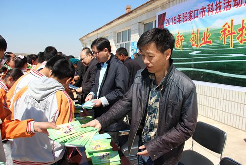

张家口市举行2015年科技活动周启动仪式
上传时间：2015-08-24 21:50 点击次数：12次
5月15日，张家口市科技活动周启动仪式在沽源县九连城镇建国村展开，市科技局副局长王列、市科协副主席常兴利、市委宣传部有关领导及沽源县副县长张瑞参加启动仪式。启动仪式由沽源县科技局局长张立新主持，市科技局副局长王列致开幕辞。宣化县副县长张瑞就科技活动周讲了具体意见。此次活动共接待村民200余人，学生100余名。共发放科普图书500余册，科普宣传画50余份。 今年科技活动周的主题是创新创业、科技惠民。目的是宣传创新驱动经济社会发展、创新创业成果服务改善民生,进一步提高公众科技意识和科学素养，为加快张家口实现绿色崛起奠定坚实的社会基础。 今年张家口市科技活动周在活动内容上丰富多样、突出重点；在活动形式上重心下移、不断创新；在活动类型上凸显优势、特色鲜明。各县区、高等院校、科研院所等县区和部门在活动周期间开展一系列科普活动。科技活动周的开展，为广泛传播科学知识，提供科普惠民服务，形成人人讲科技，个个学科技，全民用科学、懂科学、爱科学的良好科技氛围提供了有力的科技支撑。